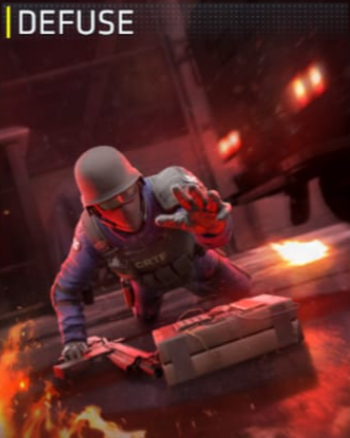
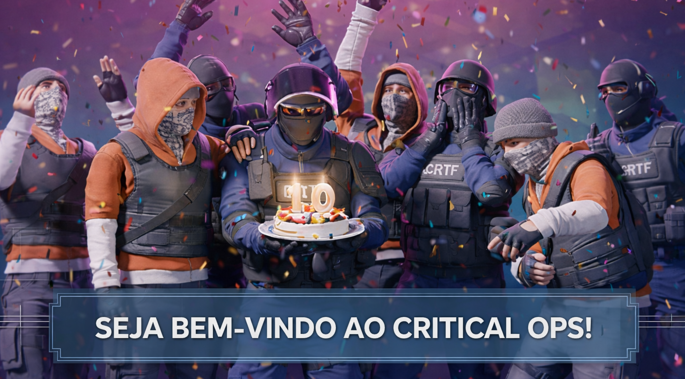
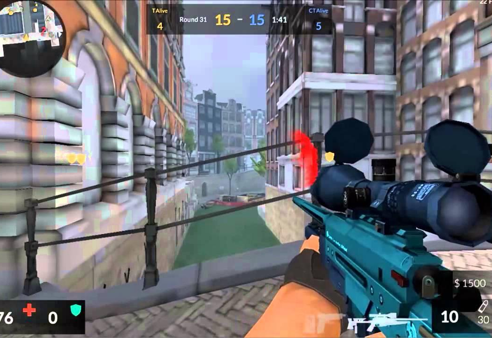
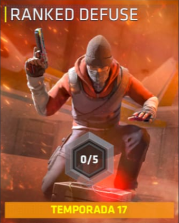
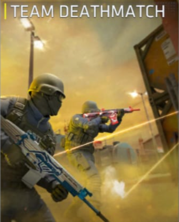
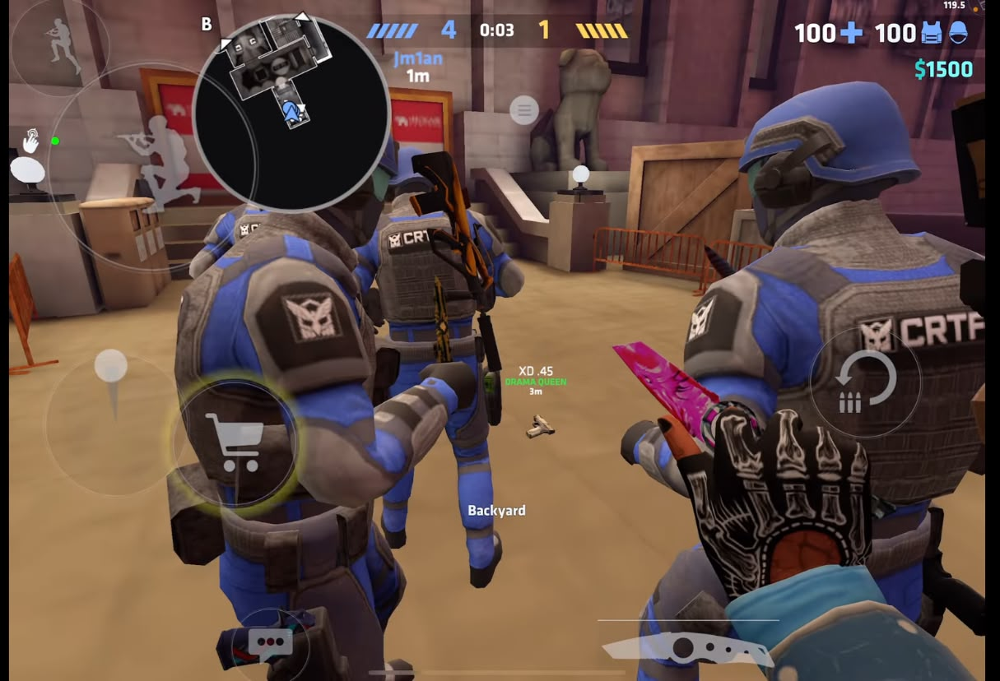

Desarmar
Duas equipes se alternam entre ataque e defesa por rodadas.


Critical Ops reúne duas equipes em partidas táticas. No Desarmar Ranqueado, cada rodada exige concentração e decisões em conjunto.
É fácil lembrar o placar da última disputa. Já o tempo que passou desde a primeira nem sempre fica tão claro. O Tracker nasceu dessa diferença.


Duas equipes se alternam entre ataque e defesa por rodadas.

Versão competitiva do Desarmar. É o modo que entra no diário de tempo.

Partidas rápidas com reaparecimento. Seus mapas também estão na galeria.
Gabriel descobriu o Critical Ops na Play Store em 2018. Jogava no Galaxy J2 Prime da mãe: o celular travava, mas a vontade de voltar para a próxima partida continuava.

Anote a data, o mapa e quantas ranqueadas jogou. O diário mostra como o tempo se distribuiu pelos dias, quais mapas apareceram mais e quando pode valer a pena fazer uma pausa.
O objetivo é reconhecer os próprios hábitos e reservar espaço para estudo, descanso e lazer.